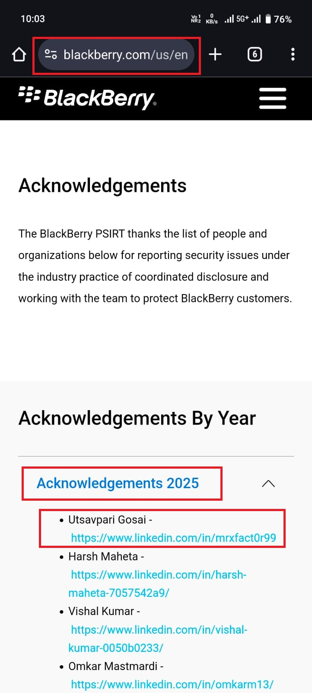

Hello Hackers,
.png)
I hope you all are doing great. Today, I’m excited to share a short story about how I got listed on BlackBerry’s Hall of Fame. 🏆 Let’s get started!
First of all, I want to clarify that BlackBerry does not allow public disclosure of vulnerabilities, even after they are patched. Because of this policy, I won’t be sharing the exact technical details of the bug.
However, I can definitely share some valuable tips that helped me during this process and might help you improve your bug hunting journey.
Key Takeaways from This Finding
- Always review server-side security carefully. Many organizations unintentionally overlook this area.
- Some components may appear out of scope or boring, which is exactly why most hunters ignore them.
- Validate everything from minor misconfigurations to major security flaws.
- Small vulnerabilities, when responsibly reported, can still earn recognition and appreciation.
In many cases, success doesn’t come from complex exploits, but from patience, consistency, and attention to detail. Never skip the basics.
- Hall Of Fame: https://www.blackberry.com/us/en/services/blackberry-product-security-incident-response

Final Thought: Keep learning, keep testing, and never underestimate the impact of minor security issues. They matter more than you think. 🧠
I would also like to give special thanks to my Best Friend ❤️ and one of the most talented hackers I know, Shiva 🕉️ the biggest hacker of the multiverse 🌌 for constant support and motivation throughout this journey.
Thank You,
MR.X FACTOR 🚀
🔗 Handles:
- Linktree: https://linktr.ee/mrxfact0r_99